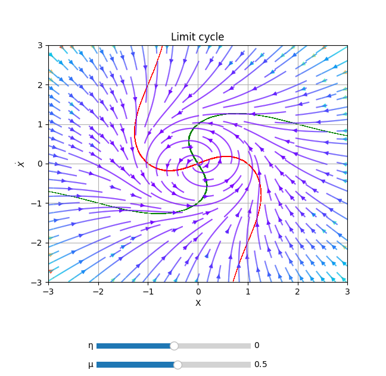

PhasePortrait2D
class phaseportrait.PhasePortrait2D(dF, Range, *, MeshDim=10, dF_args={}, Density=1, Polar=False, **kargs)
Gives the option to represent a 2D phase portrait given a dF function with 2 args.
Parameters
-
dF : callable
A dF type funcion. Computes the derivatives of given coordinates.
-
Range : [x_range, y_range]
Ranges of the axis in the main plot. See Defining Range.
Key Arguments
-
MeshDim : int, default=500
Number of elements in the arrows grid.
-
dF_args : dict
If necesary, must contain the kargs for the
dFfunction. -
Density : float, default=1
Number of elements in the arrows grid plot.
-
Polar : bool, default=False
Whether to use polar coordinates or not.
-
Title : str, default='Phase Portrait'
Title of the plot.
-
xlabel : str, default='X'
x label of the plot.
-
ylabel : str, default='$\dot{X}$'
y label of the plot.
-
color : str, default='rainbow'
Matplotlib
Cmap.
Methods
PhasePortrait2D.plot
PhasePortrait2D.plot(*, color=None)
Prepares the plots and computes the values.. Color scheme can be changed introducing key argument color. A list with accepted values can be found here.
Returns
- tuple(matplotlib Figure, matplotlib Axis)
PhasePortrait2D.add_slider
PhasePortrait2D.add_slider(param_name, *, valinit=None, valstep=0.1, valinterval=10)
Adds a slider which can change the value of a parameter in execution time.
Parameters
-
param_name : str
The string key of the variable. Must be the same as the key in the
dFfunction.
Key Arguments
-
valinit : float, default=None
Initial value of the parameter.
-
valinterval : Union[float, list], default=0.1
The range of values the slider of the parameter will cover.
-
valstep : float, default=10
Precision in the slider.
Returns
- None
PhasePortrait2D.add_nullclines
PhasePortrait2D.add_nullclines(*, precision=0.01, offset=0, density=50, xRange=None, yRange=None, dF_args=None, xcolor='r', ycolor='g', bgcolor='w', alpha=0)
Plots nullclines of the system given by dF function. For more info, see Nullclines class.
Returns
- None
Defining Range
-
A single number. In this case the range is defined from zero to the given number in both axes.
-
A range, such
[lowerLimit , upperLimit]. Both axes will take the same limits. -
Two ranges, such that
[[xAxisLowerLimit , xAxisUpperLimit], [yAxisLowerLimit , yAxisUpperLimit]]
Examples
from phaseportrait import PhasePortrait2D
def dF(r, θ, *, μ=0.5,η=0):
return μ*r*(1 - r*r), 1+η*θ
example = PhasePortrait2D(dF, [-3, 3], Density=2, Polar=True, Title='Limit cycle')
example.add_slider('μ', valinit=0.5)
example.add_slider('η', valinit=0.0)
example.add_nullclines()
example.plot()
